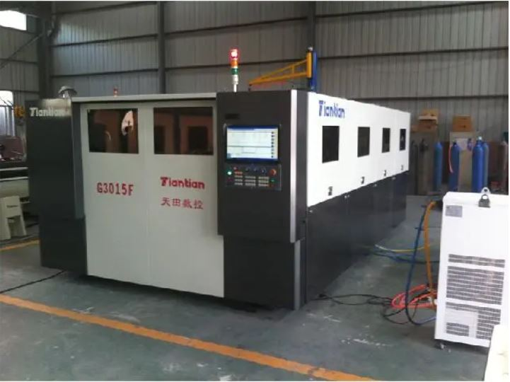

How to ensure safety ?
Wear personal protective equipment:
Operators must wear appropriate personal protective equipment, such as laser safety glasses or face shields, to ensure that their eyes and skin are not damaged by laser radiation.

Equipment maintenance and calibration:
Ensure that laser cutting equipment is regularly maintained and calibrated to ensure that it operates within safe parameter ranges.
Work Area Restrictions:
Use safety barriers or other appropriate facilities to restrict unauthorized personnel from entering the work area and prevent unintentional exposure to laser radiation.
Emergency stop and emergency plan:
Design and implement emergency stop buttons and prepare emergency plans to respond to unexpected events such as laser leakage or equipment failure.
Ventilation and protective measures:
Ensure sufficient ventilation in the work area to prevent the impact of smoke, dust, and gases generated during laser cutting on operators.
Laser cutting materials
Stainless Steel
The advantages of stainless steel as a laser cutting material:
1.High precision
Laser cutting of stainless steel pipes is a high-precision processing method, with an accuracy of less than 0.1mm. This high-precision machining can not only meet the high precision requirements of component processing in industrial production, but also meet the needs of art, model making and other fields.
2.High efficiency
Compared to traditional processing methods, laser cutting of stainless steel pipes has higher processing efficiency. On the one hand, laser cutting equipment is easy to operate and can complete complex shape cutting in a short time; On the other hand, the power density of lasers is high, and high-power lasers can be used to cut stainless steel pipes of different thicknesses, greatly shortening the processing cycle and improving production efficiency.
3.Security
In the process of laser cutting, there is no need to fix the material, and there are no issues such as vibration and noise, avoiding safety hazards caused by vibration or noise in traditional processing.
Leatherwear

The advantages of laser cutting leather
1. High precision:
The laser beam is small and energy intensive, which can achieve very fine cutting. The cutting edge is flat and smooth, and there is no need for subsequent polishing treatment.
2. No damage:
Laser cutting does not require direct contact with materials, nor does it generate vibration and impact during the cutting process, so it will not cause any damage to leather materials.
3. Efficiency:
Laser cutting has a fast speed, high degree of automation in the entire cutting process, and does not require manual intervention, thus greatly improving production efficiency.
Ensuring CNC security
Training and Education:
All operators should receive professional training to understand the operating procedures, safety precautions, and emergency response methods of CNC machine tools.
Programming and operating standards:
Strictly adhere to programming and operating standards to avoid accidents caused by operational errors or incorrect program settings. Ensure that each step of the operation follows the correct procedures and standards.

Operation monitoring and tracking:
Real time monitoring and tracking of CNC machine operation is carried out through the monitoring system, and abnormal situations are detected in a timely manner and measures are taken.
Introduction to CNC process
CO2 laser cutting
Working principle:
Using CO2 gas as the excitation medium, laser amplification occurs, and cutting is carried out after focusing through an optical system.
Applicable materials:
Suitable for both metal and non-metal materials, such as stainless steel, aluminum alloy, wood, plastic, etc.
Application scenarios:
Widely used in metal processing (such as automotive parts, household appliances, aerospace), cutting of non-metallic materials (such as paper, fabric, leather, etc.), and process processing (such as carving, punching, etc.).
Fiber laser cutting
Working principle:
Using fiber optic as the laser medium, the laser beam is transmitted through the fiber optic and cut through a focusing optical system.
Applicable materials:
mainly used for metal materials, such as stainless steel, aluminum alloy, carbon steel, etc.
Application scenarios:
Especially suitable for applications that require high-speed and high-precision cutting, such as automotive manufacturing, aerospace, electronic equipment production, etc.
Confirm the equipment and materials used for the application
Equipment:
CNC Milling Machine:
Equipment used for cutting, cutting, or engraving operations on workpieces. Suitable for processing materials such as metal, plastic, wood, etc.
CNC Lathe Machine:
a device used to rotate workpieces and perform precise cutting or trimming. Mainly suitable for metal processing, such as steel, aluminum, etc.
CNC Laser Cutting Machine:
a device that uses laser beams for high-precision and high-speed cutting. Suitable for processing metal and non-metallic materials, such as steel, aluminum, wood, leather, etc.

CNC Punching Machine:
Equipment used for stamping, punching, or forming flat materials. Suitable for processing metal sheets, such as steel plates.
Material Science:
Metal materials:
including steel, stainless steel, aluminum, copper and other metal materials, suitable for various processing operations.
Plastic materials:
such as polyvinyl chloride (PVC), polypropylene (PP), polystyrene (PS), etc., suitable for cutting, carving, forming and other processing.
Wood materials:
such as plywood, density board, solid wood, etc., suitable for cutting, carving, hollowing and other processing.
Composite materials:
such as carbon fiber composite materials (CFRP), glass fiber composite materials (GFRP), etc., suitable for cutting, drilling and other processing.
Back